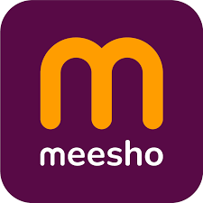
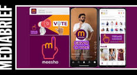

How India's social commerce leader turned civic duty into brand amplification and budget fashion into aspirational trends.

Meesho doesn't win with premium products or heavy ad spends. They win with distribution precision and cultural timing. The brand has mastered turning human behavior into brand moments without direct sales pressure.
This case study analyzes two campaigns that reveal Meesho's core strength: #WaitNahiVoteKaro — a non-commercial masterclass in cultural moment marketing — and #Trendz / "Just Maximise" — a repositioning campaign that transformed budget shopping into aspirational trends.
Both campaigns prove that in social commerce, distribution beats product, and timing beats budget.
Meesho identified a behavioral gap—young voter procrastination—and turned India's General Elections into a brand amplification engine. The strategy attacked delay, not awareness. Everyone knows they should vote. The friction is postponement.
Instead of paid media saturation, Meesho weaponized its owned ecosystem: app banners, push notifications, employee amplification. The logo became an inked finger—brand became campaign. No separation between messaging and identity.
"Wait nahi, vote karo became a behavioral command. Meesho didn't sell products—they sold immediacy. 120 crore impressions prove cultural precision beats media spend."
#GRWMtoVote adapted influencer formats for civic action. Distribution hit every channel: social, influencers, employees as micro-nodes. The funnel replaced commerce with behavior—social awareness → creator consideration → time-based voting conversion. 22 crore reach without sales incentives.

Meesho solved its core perception problem: affordable but not aspirational. Instead of premium competition, they reframed budget shopping as "latest trends without overthinking". "Just maximise" flipped psychology—saving became freedom.
Ranveer Singh + Rashmika Mandanna injected credibility. The refrigerated truck stunt created offline curiosity that drove online conversation. Visual overload and humor made trend consumption feel exciting, not practical.
"100 million reach in 4 days. Meesho broke its budget stereotype—not through discounts, but through confidence. Spectacle + celebrity = perception shift at scale."
Layered distribution: TV scale + Instagram depth + Swiggy Instamart surprise. Influencers like Urfi Javed amplified organically. Funnel prioritized attention spikes: truck stunt → social engagement → celebrity consideration. Strong initial traction proved repositioning worked.
#WaitNahiVoteKaro proves elections create attention windows most brands miss. Timing + owned distribution = massive reach without ad spend.
Attack actual user friction (delay, overthinking) rather than awareness gaps. Behavioral precision converts better than informational campaigns.
Meesho's app ecosystem (banners, notifications, employees) creates frequency at zero marginal cost—most brands underutilize this massively.
Inked finger logo transformation eliminated recall separation. When brand identity becomes the message, every impression reinforces both.
"Just maximise" reframed affordability as empowerment. Psychological flip creates aspirational positioning without premium pricing.
Refrigerated truck created curiosity gaps that drove digital conversation. Physical disruption amplifies digital campaigns exponentially.
Meesho proves social commerce wins through distribution precision and cultural alignment. #WaitNahiVoteKaro mastered non-commercial amplification. #Trendz repositioned budget as aspiration. Both used simplicity at scale.
The universal lesson: find human friction, attach simple messaging, distribute everywhere. Meesho doesn't compete on product—they compete on execution.
Brands must stop thinking products first. Distribution, timing, and behavioral insight win markets.
At Brand Business Talk, we help brands with research, strategy, market insights, and growth recommendations. Let's build your brand growth strategy together.